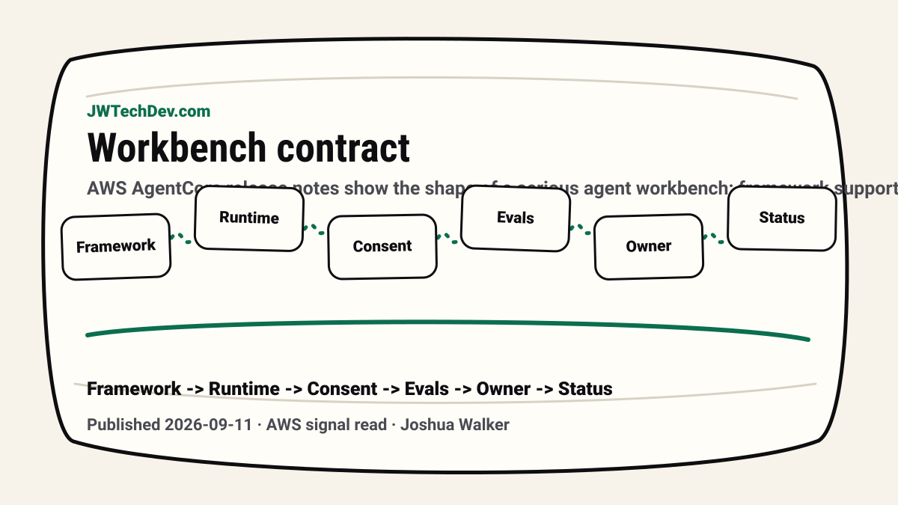

The agent workbench contract is becoming real
AWS AgentCore release notes show the shape of a serious agent workbench: framework support, evaluations, consent state, identity, registry metadata, access boundaries, and approval mode.

Quick answer
A serious agent workbench should expose the contract around an agent: framework, runtime, eval coverage, consent state, owner, allowed data, allowed tools, approval mode, cost policy, and deployment status.
The useful signal
The September 2026 AgentCore release notes added TypeScript framework support for AgentCore Evaluations across Strands Agents, LangGraph, OpenAI Agents, and Vercel AI SDK. They also added a Consent Portal for AgentCore Identity, where users can approve an agent’s access before it proceeds.
That is not just a feature list. It is a product signal. Agent platforms are moving toward visible contracts around runtime, framework, evaluation, identity, and consent.
Why the workbench needs first-class fields
Too many agent systems hide important facts in backend config. What framework is this agent built on? What runtime owns it? What eval suite covers it? What tools can it call? What consent has the user granted? What data classes are approved?
Those should not be trivia. They should be visible fields in the workbench because they define whether the agent is safe enough, tested enough, and owned enough to use.
Consent is product state
Consent should not be treated as a one-time checkbox. If an agent acts on behalf of a user, the workbench should show consent state, requested scopes, expiry or revocation behavior, and whether the current action needs a fresh approval.
That matters for trust. A user should know why an agent is asking for access, what the agent can do with that access, and what happens next.
Framework support changes the registry conversation
As evaluation support expands across frameworks, the registry needs to know more than “this is an agent.” It should know the framework, instrumentation path, eval rubrics, supported tool types, owners, deployment stage, and rollback handle.
That is how you avoid building a random drawer full of agent experiments. You create a catalog of capabilities with enough metadata to govern and reuse them.
JWT read
The agent workbench should stop looking like a chat box with settings hidden behind the curtain. It should look like a control surface for production work.
The useful fields are not glamorous: consent, eval coverage, framework, runtime, owner, approval mode, cost policy, and deployment status. Those fields are the difference between agent experimentation and agent operations.
Sources checked
Want the starter kit?
Grab the free JWTechDev.com starter kit if you want a practical way to connect AWS, AI workflows, and approval gates.
Get resources